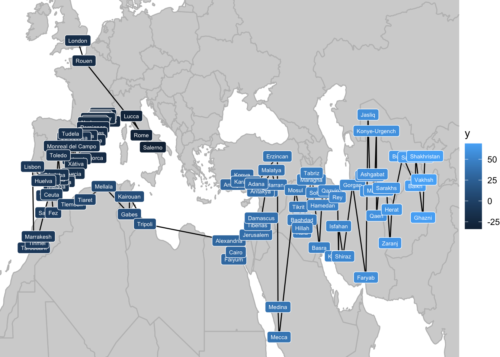
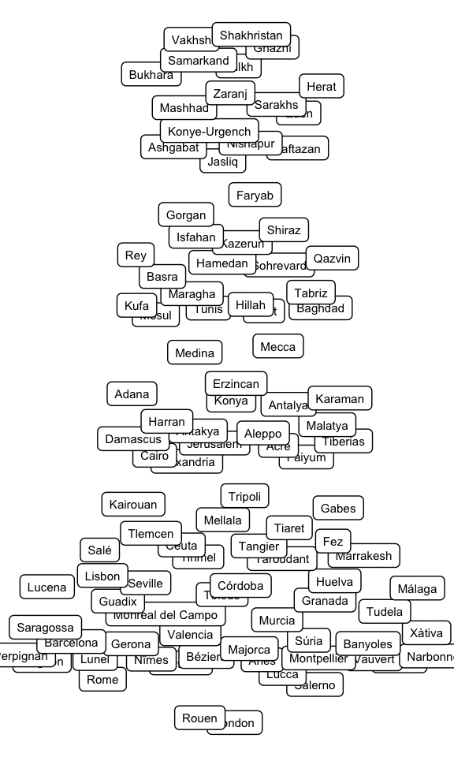

# A tibble: 10 × 5
name city date religion notes
<chr> <chr> <dbl> <chr> <chr>
1 al-Kindī Kufa 801 Muslim <NA>
2 al-Kindī Baghdad 820 Muslim <NA>
3 al-Kindī Baghdad 871 Muslim <NA>
4 Ḥunayn ibn Isḥāq Kufa 809 Christian al-Ḥīrah
5 Ḥunayn ibn Isḥāq Baghdad 828 Christian <NA>
6 Ḥunayn ibn Isḥāq Baghdad 873 Christian <NA>
7 Isḥāq ibn Ḥunayn Baghdad 830 Christian <NA>
8 Isḥāq ibn Ḥunayn Baghdad 910 Christian <NA>
9 Abū Bakr al-Rāzī (Rhazes) Rey 864 Muslim <NA>
10 Abū Bakr al-Rāzī (Rhazes) Baghdad 880 Muslim <NA> Designing a Poster to Visualize the Timeline of Philosophers in the Islamic World
R
ggplot2
DataViz
One day when I was in 5th grade, I walked into my classroom to find a new poster on the wall. It was a visualization of the entirety of world history - I was transfixed. This is that poster below. You can buy it here. It’s greatest innovation is squishing geography (which is generally two-dimensional) onto the y-axis. A lot of detail is lost, but the gained ability to visualize history all at once on a wall poster makes it worth it.

I quickly asked my parents if I could get one for myself. When I finally did, I set it up next to my bed - as I lay there every night, I would look at all the little details. I even found a few mistakes.
Fast forward a decade and a half. I’ve been really enjoying this podcast, The History of Philosophy Without Any Gaps. I’m on episode 290 at the moment. Learning about all of these philosophers is great, but they can be hard to keep track of. I need a timeline that keeps track of geography too.
This is exactly the kind of problem for which I developed the wormsplot package in R, inspired by that wonderful poster from my childhood. In this post, I’ll walk through the process of designing a wall poster to visualize the major philosophers of the Islamic world in the Middle Ages.
Code and data for this project can be found here.
Step 1: The Data
I gathered this data myself from wherever I could find it - mostly Wikipedia and The Stanford Encyclopedia of Philosophy. It includes one row for each new stop along the way of a biography (starting with the birth date - usually an educated guess), plus one extra for the death date. I’m no historian, so don’t rely too heavily on the accuracy of these data. Actually even if I were a historian this would take a lot of guesswork - that’s how medieval history goes. Anyhow, here’s what it looks like: one column for name, one for city, one for date, and one for the philosopher’s religion (Muslim, Jewish, or Christian). For cities that no longer exist or are called something different now, I wrote the closest modern equivalent and made a note of it on the side.
Step 2: Fitting Geography Onto One Axis
The biggest challenge here is that y-axis. The first step: Find the latitude and longitude of each city in the data by calling the Open Street Map API. This worked very smoothly for everything except the city of Alexandria, which it identified at Alexandria, Virginia. After fixing that problem, I could plot a map of all the cities in the data:
There are many ways to reduce two-dimensional data to one dimension, and the best choice depends on the task at hand. If my places were grouped into distinct regions, I might consider t-SNE or UMAP. If they were generally aligned along some diagonal axis, I might use Principle Component Analysis. As it stands though, I know exactly how I want my y-axis to be organized: It should go East to West along the coast of North Africa and then West to East within Western Europe. This makes sense both geographically and historically: Since Andalusia (Muslim Spain) was the main point of contact between the Islamic world and Christian Europe, Southern France should be ‘farther’ from Tunisia than Spain.
So I split the cities into Europe and Non-Europe and lined them up by longitude accordingly. After a few manual adjustments (going through all of Turkey before moving South along the Mediterranean coast, and moving Northern France and London to the far end of the axis), I ended up with this ordering:

The final step was to make up for the fact that certain cities that are very close to each other in longitude are actually quite far away on the North-South axis. I achieved this by scaling the distance between each city on the axis by the true Euclidean distance between them. This stretches out certain parts of the axis disproportionately, but it means that adjacent locations are the right relative distances away from each other. With that, here are all the cities arranged along the new y-axis:

Step 3: Layout
With the y-axis defined, it’s time for some graphic design. I originally toyed with a gradient background along the y-axis, but settled on dividing it up into larger regions. Here’s the resulting blank plot:
Step 4: Plot!
Now that we have a suitable background, all that remains to represent the data. This is done using the wormsplot function stat_worm(). Labels are added with the aid of the label_worms() function. The worms are colored by their religion: Muslims in green, Jews in blue, and Christians in red.

I think it looks quite nice! Even without squinting at the individual names, big trends in the history of philosophy are immediately evident, like the Baghdad school starting with al-Kindī and running for about 150 years, or the explosion of philosophical activity in Andalusia in the 12th century.
At the moment, this is just a proof of concept. The labeling of the worms especially needs some work. If I were to produce a finished poster, I would also include a timeline of important events along the bottom, and a legend to explain the format. I might also want to simplify the data somewhat - a few of these figures moved around a lot in their lifetimes (Ibn `Arabi, I’m looking at you) and are making it a bit difficult to follow the lines.